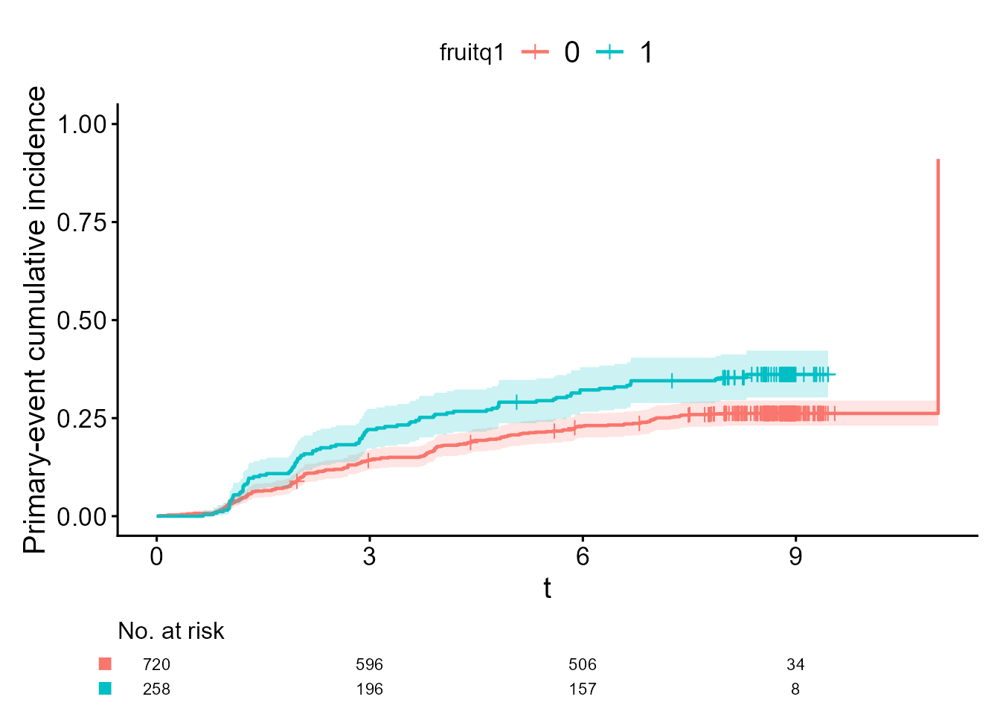

Choose the reporting workflow that matches your analysis:
| Your starting point | Recommended workflow | Result |
|---|---|---|
| Dataset and outcome definitions | cifreport() |
Complete analysis report with tables and figures |
Fitted cifcurve() object |
gtsummary::tbl_survfit() |
Cumulative incidence table |
Fitted polyreg() object |
gtsummary::tbl_regression() or
modelsummary
|
Event-specific effect estimates |
The examples generate and interpret tables and figures. Code using
gtsummary requires version 2.6.1 or later; the regression
tables also require broom.helpers 1.20.0 or later.
Version note (2026-11-16): cifreport() is
available in the GitHub development version of cifmodeling
but is not exported by CRAN release 1.2.4. The cifreport()
examples run only if the function is available. The other
table-formatting examples do not require it. Check your installation
with "cifreport" %in% getNamespaceExports("cifmodeling").
For an end-to-end analysis, see Worked
examples; for plots, see Gallery.
1. Create a complete report with cifreport()
cifreport() produces baseline characteristics, event
counts, estimated probabilities, unadjusted (crude) risk ratios,
curve-comparison tests, and figures. It can analyze several
outcomes in one report and export Word, HTML, or PDF files. The
function also returns the tables, plots, fitted models, and analysis
status for inspection in R.
Create an editable Word report
Supply a dataset, outcome definition, and grouping variable;
cifreport() performs the analysis and saves the report.
This short example is not executed during the vignette build because it
would write a file:
data("diabetes.complications", package = "cifmodeling")
cifreport(
diabetes.complications,
outcomes = list(Retinopathy = list(
time = "t", event = "epsilon", outcome.type = "competing-risk",
time.point = 8
)),
exposure = "fruitq1",
characteristics = c("age", "sex"),
filename.cifreport = "diabetes-report.docx"
)Word tables are editable. Use .html or .pdf
filenames for the other formats, or a vector of filenames to save
multiple formats in one analysis. The directory must already exist;
existing files are overwritten. File output requires Pandoc, Word also
needs xml2 and zip, and PDF requires Chrome,
Chromium, or Microsoft Edge (set CIFREPORT_BROWSER if
necessary).
Inspect an analysis with two outcomes in R
In diabetes.complications, event code 1 denotes diabetic
retinopathy, code 2 denotes macrovascular complications, and code 0
denotes censoring. We report the retinopathy CIF and
complication-free survival, for which either complication
counts as an event. Follow-up time t is measured in
years.
library(cifmodeling)
data("diabetes.complications", package = "cifmodeling")
cohort <- transform(diabetes.complications, all_event = epsilon != 0)
report <- cifreport(
cohort,
exposure = c("Fruit intake" = "fruitq1"),
code.exposure.ref = 0,
characteristics = c("age", "sex"),
outcomes = list(
Retinopathy = list(
time = "t", event = "epsilon", outcome.type = "competing-risk",
time.point = c(4, 8)
),
"Complication-free survival" = list(
time = "t", event = "all_event", outcome.type = "survival",
time.point = c(3, 8)
)
),
overall = TRUE,
filename.cifreport = NULL
)
# Estimated probabilities at the requested time points (Table 3)
report$tables$All[["Fruit intake"]]$table3
#> population_id group_id outcome_id timepoint group_level
#> 1 All Fruit intake Retinopathy 4 0
#> 2 All Fruit intake Retinopathy 8 0
#> 3 All Fruit intake Retinopathy 4 1
#> 4 All Fruit intake Retinopathy 8 1
#> 5 All Fruit intake Complication-free survival 3 0
#> 6 All Fruit intake Complication-free survival 8 0
#> 7 All Fruit intake Complication-free survival 3 1
#> 8 All Fruit intake Complication-free survival 8 1
#> group_label primary competing estimate conf.low conf.high estimator status
#> 1 0 128 25 0.1779768 0.1509053 0.2067678 AJ ok
#> 2 0 188 57 0.2619722 0.2304570 0.2947619 AJ ok
#> 3 1 67 10 0.2596899 0.2081071 0.3148464 AJ ok
#> 4 1 91 22 0.3531391 0.2960080 0.4124579 AJ ok
#> 5 0 122 NA 0.8304559 0.8021812 0.8569671 KM ok
#> 6 0 245 NA 0.6584656 0.6233520 0.6927301 KM ok
#> 7 1 62 NA 0.7596899 0.7057517 0.8097663 KM ok
#> 8 1 113 NA 0.5613174 0.5003831 0.6213374 KM okSetting filename.cifreport = NULL computes the results
without saving a file, allowing you to inspect them
before export. The returned report$status data frame
records skipped analyses, warnings, and failures. A failure in one
analysis does not necessarily stop the others.
head(report$status)
#> [1] population_id group_id outcome_id timepoint group_level
#> [6] analysis status message
#> <0 rows> (or 0-length row.names)Omit filename.cifreport to save a date-stamped Word
report in the working directory. Set it to NULL to inspect
results without writing a file. You can specify separate time points and
probability scales for each outcome, as in the example above.
View results from the report
The table above and figure below are taken directly from the returned
report object, not recreated from example numbers. When
cifreport() is available, they are generated by the
vignette build from the fitted analysis.
report_figure <- report$figures$All[["Fruit intake"]][["Retinopathy"]]
if (is.null(report_figure)) {
stop("The retinopathy figure was not returned by cifreport().")
}
print(report_figure)
Retinopathy cumulative incidence figure produced by cifreport()
To inspect the event counts, probabilities, and analysis status, use
report$tables and report$status; the example
above displays Table 3 and the first status records. The plot uses the
same fitted analysis as the report tables. The Word export organizes
these results into a document with editable tables.
What does the report contain?
The report includes five tables for each analysis population and exposure definition:
| Table | Contents |
|---|---|
| 1 | Baseline patient characteristics, with optional overall column and group-comparison p-values |
| 2 | Observed event and censoring counts over follow-up |
| 3 | Observed cumulative counts and estimated KM or AJ probabilities at the requested times, with pointwise confidence intervals |
| 4 | Unadjusted risk ratios at each requested time, fitted
using polyreg()
|
| 5 | Curve comparison tests: log-rank for survival and Gray for competing risks |
Each figure displays an outcome on the selected probability scale.
For a survival endpoint, the default is KM survival; for competing
risks, it is the primary-event AJ cumulative incidence. Use
estimator = "1-KM" or "1-AJ" within an outcome
definition to report the complementary probability. Table 4 always
concerns event probabilities: 1 - KM for a
survival endpoint and the cause-specific CIFs for competing risks. The
reported RRs are unadjusted; no baseline covariates enter these
fits.
Useful options and scope
Use subset.condition to select the analysis population
and subgroup to report results separately for each level of
a categorical variable. Add multiple exposures by passing a named
vector, for example
exposure = c("Fruit intake" = "fruitq1", Sex = "sex"). You
can change exposure reference codes with code.exposure.ref,
display labels with label.strata, and figure settings with
cifplot.args. The report’s group labels and order are
shared by tables and figures.
cifreport(
cohort,
outcomes = list(Retinopathy = list(
time = "t", event = "epsilon", outcome.type = "competing-risk",
time.point = 8
)),
exposure = "fruitq1",
subgroup = "sex",
subset.condition = "age >= 50",
label.strata = c("0" = "Other intake", "1" = "Low intake"),
cifplot.args = list(label.x = "Years", add.risktable = FALSE),
filename.cifreport = NULL
)cifreport() supports unweighted, right-censored data
with one row per subject and at most one competing-event code per
outcome. It does not fit adjusted risk-ratio models, handle
time-dependent covariates or recurrent events, or construct simultaneous
confidence bands. Some results may be unavailable: for example, an RR
requires adequate follow-up in each group, and competing-risk regression
requires both event types to have been observed by the requested time.
Review report$status when preparing results for
publication. For detailed options, see ?cifreport.
2. Report cumulative incidence from cifcurve()
If a curve is already fitted, you can create a publication table
without running cifreport(). The example uses
gtsummary::tbl_survfit() on a reproducible sample of 200
observations from the same diabetes cohort.
A table of cumulative incidence probabilities
library(cifmodeling)
library(gtsummary)
data("diabetes.complications", package = "cifmodeling")
set.seed(1)
report_data <- diabetes.complications[
sample.int(nrow(diabetes.complications), 200L),
]
report_data$fruitq1 <- factor(
report_data$fruitq1, levels = c(0, 1),
labels = c("Other intake", "Low intake")
)
curve <- cifcurve(
Event(t, epsilon) ~ fruitq1, data = report_data,
outcome.type = "competing-risk"
)
cif_table <- tbl_survfit(
curve, times = c(4, 8), type = "risk",
label_header = "**{time}-year CIF**"
)
cif_table| Characteristic | 4-year CIF | 8-year CIF |
|---|---|---|
| fruitq1 | ||
| Other intake | 18% (12%, 25%) | 25% (18%, 32%) |
| Low intake | 27% (16%, 39%) | 34% (22%, 47%) |
For competing risks, cifcurve() stores
surv = 1 - CIF in its survfit-compatible
result. Therefore, type = "risk" displays the
CIF, with the saved confidence limits complemented and
reordered as needed. tbl_survfit() uses the fitted
estimates and intervals without refitting the curve.
Choose the confidence interval before making the table
Specify the variance method, reference distribution, and
transformation in cifcurve(), not in
tbl_survfit(). The next example requests an
influence-function (IF) variance, Student critical values, and a log-log
transformation. On the CIF scale, this corresponds to a complementary
log–log transformation.
student_curve <- cifcurve(
Event(t, epsilon) ~ fruitq1, data = report_data,
outcome.type = "competing-risk",
error = "if", conf.dist = "t", conf.type = "log-log"
)
student_table <- tbl_survfit(
student_curve, times = c(4, 8), type = "risk",
label_header = "**{time}-year CIF**"
) |>
modify_footnote_header(
columns = all_stat_cols(),
footnote = paste(
"95% pointwise IF-t intervals; log-log transformation of 1 - CIF;",
"deletion allocation for degrees of freedom."
)
)
student_table| Characteristic | 4-year CIF1 | 8-year CIF1 |
|---|---|---|
| fruitq1 | ||
| Other intake | 18% (13%, 25%) | 25% (19%, 33%) |
| Low intake | 27% (17%, 41%) | 34% (23%, 48%) |
| 1 95% pointwise IF-t intervals; log-log transformation of 1 - CIF; deletion allocation for degrees of freedom. | ||
error = "fay" instead requests a Fay–Graubard-type
variance correction; df.method = "equal" selects an
alternative degrees-of-freedom allocation for IF-t. All supplied weights
are treated as fixed; uncertainty in an externally estimated propensity
score is not included. For the definitions and limitations, see Computational formulas.
You can inspect the degrees of freedom and interval status separately, without adding diagnostic columns to the publication table:
s <- summary(student_curve, times = c(4, 8), extend = TRUE)
data.frame(
group = s$strata, time = s$time,
df = s$df, interval_status = s$conf.status
)
#> group time df interval_status
#> 1 fruitq1=Other intake 4 131.54005 ok
#> 2 fruitq1=Other intake 8 124.85132 ok
#> 3 fruitq1=Low intake 4 49.50586 ok
#> 4 fruitq1=Low intake 8 47.15456 okUnavailable intervals remain missing, including beyond observed positive-weight follow-up. These intervals are pointwise, not simultaneous bands.
Add a curve-comparison test
The probabilities at 4 and 8 years are fixed-time estimates. By
contrast, ciftest() compares curves over a
follow-up period. The next example summarizes three tests
restricted to eight years of follow-up; it does not perform a separate
test for each column above.
tests <- list(
Gray = ciftest(Event(t, epsilon) ~ fruitq1, report_data,
test = "gray", tau = 8),
Early = ciftest(Event(t, epsilon) ~ fruitq1, report_data,
test = "score", rho = 1, gamma = 0, tau = 8),
Late = ciftest(Event(t, epsilon) ~ fruitq1, report_data,
test = "score", rho = 0, gamma = 1, tau = 8)
)
#> Detected >2 status levels; outcome.type set to 'competing-risk'.
#> Detected >2 status levels; outcome.type set to 'competing-risk'.
#> Detected >2 status levels; outcome.type set to 'competing-risk'.
test_results <- do.call(rbind, lapply(names(tests), function(name) {
x <- generics::tidy(tests[[name]])
data.frame(test = name, statistic = x$statistic, p.value = x$p.value)
}))
as_gtsummary(test_results) |>
modify_header(
test = "**Curve comparison through 8 years**",
statistic = "**Statistic**", p.value = "**p-value**"
) |>
modify_fmt_fun(p.value = label_style_pvalue(digits = 3))| Curve comparison through 8 years | Statistic | p-value |
|---|---|---|
| Gray | 1.8509852 | 0.174 |
| Early | 1.7665239 | 0.184 |
| Late | 0.7536029 | 0.385 |
The standard Gray test uses its classical covariance estimator; each score test uses its corresponding variance estimator. For the choice of weights and more advanced multiple-direction tests, see Tests of cumulative incidence functions.
Export the table
Export the table with standard gtsummary converters.
Replace the example filenames with your preferred paths:
gt::gtsave(gtsummary::as_gt(student_table), "cif-table.html")
flextable::save_as_docx(
gtsummary::as_flex_table(student_table),
path = "cif-table.docx"
)3. Report regression results from polyreg()
polyreg() estimates effects for both competing events in
one joint model. gtsummary can display each event
separately or combine their results side by side. Here, we use the full
diabetes cohort, rather than the 200-record sample above, to estimate
8-year risk ratios adjusted for age and sex.
Make an event-specific regression table
library(cifmodeling)
library(gtsummary)
data("diabetes.complications", package = "cifmodeling")
regression_data <- diabetes.complications
regression_data$fruitq1 <- factor(
regression_data$fruitq1, levels = c(0, 1),
labels = c("Other intake", "Low intake")
)
attr(regression_data$fruitq1, "label") <- "Fruit intake"
fit <- polyreg(
nuisance.model = Event(t, epsilon) ~ age + sex,
exposure = "fruitq1", code.exposure.ref = "Other intake",
data = regression_data, time.point = 8,
effect.measure1 = "RR", effect.measure2 = "RR"
)
retinopathy_table <- tbl_regression(fit, exponentiate = TRUE)
retinopathy_table| Characteristic | RR1 | 95% CI | p-value |
|---|---|---|---|
| Fruit intake | |||
| Other intake | — | — | |
| Low intake | 1.42 | 1.15, 1.76 | 0.001 |
| Abbreviation: CI = Confidence Interval | |||
| 1 RR for event 1 at time 8 | |||
By default, the table reports event 1 (diabetic retinopathy).
exponentiate = TRUE shows risk ratios and the confidence
limits stored in the fit. Standard errors and test statistics remain on
the log-effect scale. These associations are not automatically causal
effects.
Show both competing events
Set event = "event2" to display results for
macrovascular complications. Because the model fits both events jointly,
no second fit is needed.
macrovascular_table <- tbl_regression(
fit, exponentiate = TRUE, event = "event2"
)
tbl_merge(
list(retinopathy_table, macrovascular_table),
tab_spanner = c("**Retinopathy**", "**Macrovascular complications**")
)| Characteristic |
Retinopathy
|
Macrovascular complications
|
||||
|---|---|---|---|---|---|---|
| RR1 | 95% CI | p-value | RR2 | 95% CI | p-value | |
| Fruit intake | ||||||
| Other intake | — | — | — | — | ||
| Low intake | 1.42 | 1.15, 1.76 | 0.001 | 1.03 | 0.61, 1.74 | >0.9 |
| Abbreviation: CI = Confidence Interval | ||||||
| 1 RR for event 1 at time 8 | ||||||
| 2 RR for event 2 at time 8 | ||||||
To obtain a tidy data frame of coefficients for both events, use
generics::tidy(fit, event = "both", exponentiate = TRUE).
Display other effect measures
Select the effect measure when fitting the model;
formatting the table does not change it. polyreg() supports
RR, OR, and SHR. At a fixed time, SHR is a ratio of cumulative
subdistribution hazards, -log(1 - CIF), rather than a
cause-specific hazard ratio. The two events can use different
measures.
This example specifies an RR for retinopathy and an SHR for macrovascular complications:
fit_mixed <- polyreg(
nuisance.model = Event(t, epsilon) ~ age + sex,
exposure = "fruitq1", code.exposure.ref = "Other intake",
data = regression_data, time.point = 8,
effect.measure1 = "RR", effect.measure2 = "SHR"
)
tbl_merge(
list(tbl_regression(fit_mixed, exponentiate = TRUE),
tbl_regression(fit_mixed, exponentiate = TRUE, event = "event2")),
tab_spanner = c("**Retinopathy (RR)**", "**Macrovascular (SHR)**")
)Confidence intervals and labels
tbl_regression() uses the intervals computed by
polyreg(), including bootstrap intervals when those are
stored. It does not replace them with ordinary Wald intervals during
exponentiation. To specify the fitted confidence level explicitly, pass
conf.level = fit$conf.int.
tbl_regression(
fit, exponentiate = TRUE, conf.level = fit$conf.int,
label = list(fruitq1 ~ "Low fruit intake versus other intake")
)| Characteristic | RR1 | 95% CI | p-value |
|---|---|---|---|
| Low fruit intake versus other intake | |||
| Other intake | — | — | |
| Low intake | 1.42 | 1.15, 1.76 | 0.001 |
| Abbreviation: CI = Confidence Interval | |||
| 1 RR for event 1 at time 8 | |||
Use label.exposure and label.strata in
polyreg() to set display labels when fitting. For
programmatic extraction, generics::tidy(fit) returns
log-scale estimates by default; set exponentiate = TRUE to
obtain ratios. The usual tidy() arguments are logical
conf.int and numeric conf.level.
Use modelsummary or export the regression table
For modelsummary, use as_modelsummary() to
supply event-specific inference results and display labels. Direct
coef(fit) and tidy(fit) retain the underlying
coefficient names. Set display.labels = FALSE in
as_modelsummary() if you need those names for
coef_map or coef_omit.
modelsummary::msummary(
as_modelsummary(fit, event = "event1"),
exponentiate = TRUE,
estimate = "{estimate} [{conf.low}, {conf.high}]",
statistic = NULL
)Export the gtsummary regression table in the same way as
the CIF table:
gt::gtsave(gtsummary::as_gt(retinopathy_table), "regression-table.html")
flextable::save_as_docx(
gtsummary::as_flex_table(retinopathy_table),
path = "regression-table.docx"
)Where to go next
For effect-model assumptions and interpretation, see Direct polytomous regression. For the choice of test, see Tests of cumulative incidence functions. For technical details of the IF-based intervals, see Computational formulas, and for complete function arguments, see Function reference.